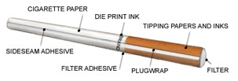

| METALS IN MEDICINE AND THE ENVIRONMENT | |||||||||||||||||||||||||
| Metals | Metals in Cigarettes | ||||||||||||||||||||||||
|
Cigarettes are smoked worldwide and contain many other substances besides tobacco, filters, and paper. In fact, over 4,000 compounds have been identified in cigarette smoke, (7) with three of the most prevalent chemicals being cadmium, nickel, and lead. (1, 2) The demand for tobacco products has continued to rise every year despite the information available about the harmful effects of smoking tobacco products, especially cigarettes. (3) Due to the high demand, the manufacturers of cigarettes have become slacker on the source of tobacco used in their products. For instance, in many places, the Nicotiana tabacum plant (Figure 1), which is the form of tobacco used in cigarettes, has been known to be a good plant for removing metals in soil. Many farmers utilize this plant due to its great ability to remove metals from soil and then sell the tobacco leaves to the cigarette manufacturers. (4)
From the tobacco leaves alone, a lot of metals end up in the cigarettes, but once the cigarettes are manufactured even more metals are added from the chemicals used during the production process, with the different parts of a cigarette displayed in Figure 2. The concentrations of metals reported in one cigarette might appear to be low but if someone smokes about a pack of cigarettes a day (20 cigarettes) then the metals and other chemicals can become harmful to the smokers health. Countless studies have been conducted to examine the metals found within a cigarette, cigarette smoke, and potential effects that the metals can have on the smoker.  A study conducted at Innsbruck Medical University analyzed the metals in cigarette smoke and concluded that there was aluminum, cadmium, chromium, copper, lead, manganese, mercury, nickel, selenium, vanadium, and zinc. (4) The concentrations of each metal found within one cigarette can be found in Table 1. Although most of these metals can be found within the body for a number of physiological processes, the act of smoking cigarettes not only increases the concentrations of the metals in the body but also interrupts the metal homeostasis and can lead to potential health problems. Table 1. Concentrations of metals in cigarettes. (4)
Cadmium is the most studied metal in cigarette smoke, and cigarettes account for the main source of cadmium intake by humans. (4) It is a known carcinogen that is found within the cigarette due to additives used in the manufacturing process and can be harmful to both smokers and victims of second-hand smoke. Upon inhalation of the cigarette smoke, cadmium is converted to cadmium oxide with about 10% deposited in the lungs and 20 – 50% transferred to the circulatory system. (7) The smoke is also of importance to a non-smoker in the vicinity of a smoker because the cadmium is easily oxidized in the air and can end up in the non-smokers circulatory system also. (1) The cadmium not only accumulates in the circulatory system, but also in the cortex of the kidney and bones. In the cortex, the cadmium becomes immobilized by the chelation of metallothioneins and can cause tubular dysfunction and renal end stage failure. Cadmium can also induce osteoporosis and osteomalacia, which can lead to ouch-ouch disease. The accumulation of cadmium has also been shown to promote cancers of the breast, prostate, colon, rectum, kidney, and the lung. However, it has not been proven indefinitely that the cadmium from cigarette smoke is the main cause of these diseases, but rather due to the contaminants from anthropogenic sources released into the environment. Although it is suspected that cadmium from cigarettes can cause cataracts, emphysema, hypertension, and cardiovascular disease. (4) Oxidative stress can be induced by smoking cigarettes and this oxidative stress can deplete levels of vitamin C, vitamin E, and carotenoids. A low level of carotenoids can allow the cadmium to directly interact with proteins on the lens of the eye and denature the proteins to cause cataracts, shown in Figure 3. (7) It has been proven that cadmium delivered through cigarette smoke during pregnancy can reduce birth weight and accumulate in breast milk. (4) Cadmium is not the only metal in cigarettes that can affect pregnancy. Actually, lead is another metal of concern from cigarette smoking that can affect the developing fetus. (2)
Exposure to lead can arise from food, drinking water, occupation, hobbies, or from the environment. However, investigators have noticed that there is an increased level of lead in blood for smokers, and is especially of significance for maternal blood during pregnancy. Lead is introduced into tobacco through fertilizers or pesticides used in farming. The maternal blood is directly correlated to the fetus blood via the umbilical cord and can easily expose the fetus to dangerous concentrations of lead. (1) Lead is of crucial concern to newborns and young children because it is a neurotoxin and can affect their brain and central nervous system, which can lead to mental retardation and other neurological disorders. (4) Lead from cigarettes is also of importance to general human health, not just during pregnancy, because it can also cause hypertension, peripheral arterial diseases, and cataracts. Another metal of interest from cigarette smoke is nickel. Nickel accumulates in the tobacco plant (0.64 – 1.15 μg/g) and the concentration in the tobacco increases dramatically through the manufacturing process via the additives used to cure the tobacco (0.078 – 5 μg/g). Nickel is mainly known for its ability to be mutagenic and has been reported to induce sister chromatide exchanges. Only a small amount of the nickel in the cigarette is taken into the body and it has not been concluded that the nickel from the smoke cannot be significant enough to cause any harmful effects. Although, small doses of nickel have been observed to affect heart development in unborn mice and can possibly affect the fetus of a pregnant smoker. This is another reason why smoking can be a bad habit for the fetus of a pregnant woman. The other metals in cigarettes can also affect the fetus even further due to the strong correlation of things ingested by the mother, which can then be transferred to the fetus. (4) It has been well known that there are many harmful chemicals in cigarettes and many organizations have been trying to reduce the exposure of cigarette smoke, especially because most of the chemicals found in cigarettes are carcinogens. Most work environments have banned employees from smoking in the workplace for the safety of its other employees. Many states have adopted the clean air policy to ban smoking in public places, which forces the smoker to go outside to smoke a cigarette instead of smoking indoors. Some places have also tried to discourage the use of cigarettes by raising the taxes on cigarettes in hopes that people will stop buying them and also to reduce the litter caused by cigarette butts. (9) These initiatives have been set to also reduce the amount of chemicals released into the environment from the large volume of cigarettes smoked on a daily basis. However, stronger enforcements need to be in place to educate the general population about the harmful effects of cigarettes and to also regulate the manufacturers of tobacco products more strictly. Resources References (1) Menden, E. E.; Elia, V. J.; Michael, L. W.; Petering, H. G. Environmental Science and Technology 6, 830 – 832 (1972). (2) Rhainds, M.; Levallois, P. American Journal of Epidemiology 145, 250 – 257 (1997). (3) Mussalo-Rauhamma, H.; Salmela, S. S.; Leppanen, A.; Pyysalo, H. Archives of Environmental Health 41, 49 – 55 (1986). (4) Bernhard, D.; Rossman, A.; Wick, G. Life 57, 805 – 809 (2005). (5) Cultivar Website. Date of Access: October, 26, 2008. (6) British American Tobacco Website. Date of Access: October, 26, 2008. (7) Nnorom, I. C.; Osibanjo, O.; Oji-Nnorom, C. G. African Journal of Biotechnology 4, 1128 – 1132 (2005). (8) Smoking: a threat to eye health Website. Date of Access: October 26, 2008. (9) Brownson, R. C.; Eriksen, M. P.; Davis, R. M.; Warner, K. E. Annu. Rev. Public Health 18, 163 – 185 (1997). Author: Vijay Ramdeen
|
|||||||||||||||||||||||||
| Topics | |||||||||||||||||||||||||
|
|||||||||||||||||||||||||
{kind=link}
{kind=link}
{kind=link}